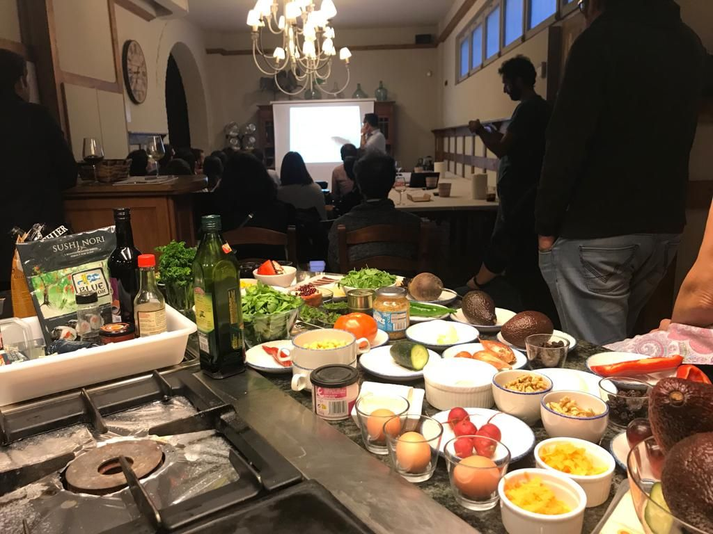

Próximos Eventos
- Feria de la arboleda 2024
- Concurso de Pintxos 2024
- Curso de cocina 2025
Feria agrícola,ganadera y artesanal reúne a miles de visitantes cada año , ofreciendo una amplia variedad de productos.

Concurso de pintxos una competición culinaria organizada por los diferentes bares de Trapagaran

Se abriran nuevas plazas para el curso de cocina de 2025
